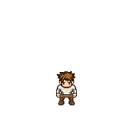
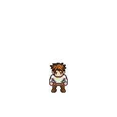
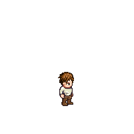
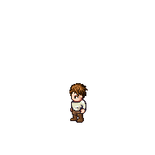
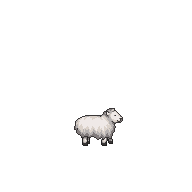
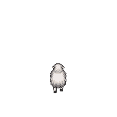
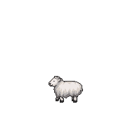

Нативные GPU-кадры увеличены CSS ×2 с nearest. Измерения сделаны до увеличения.
| Вид | Штатная 2D-сборка, камера ×2 | 3D, 32 пикселя/метр |
|---|---|---|
| human_m-0 |  |  |
| human_m-1 |  | |
| human_m-2 | ||
| human_m-3 |  | |
| sheep-0 | | |
| sheep-1 |  | |
| sheep-2 | |  |
| sheep-3 |  | |